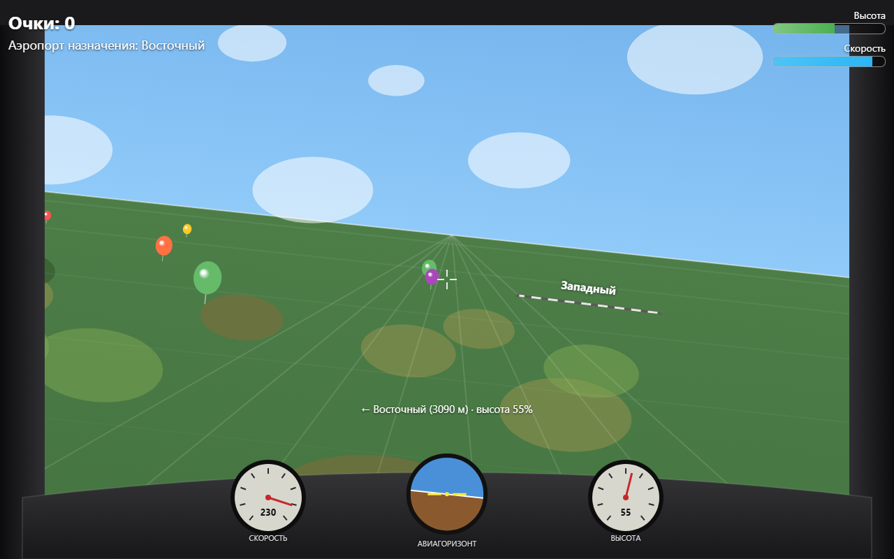
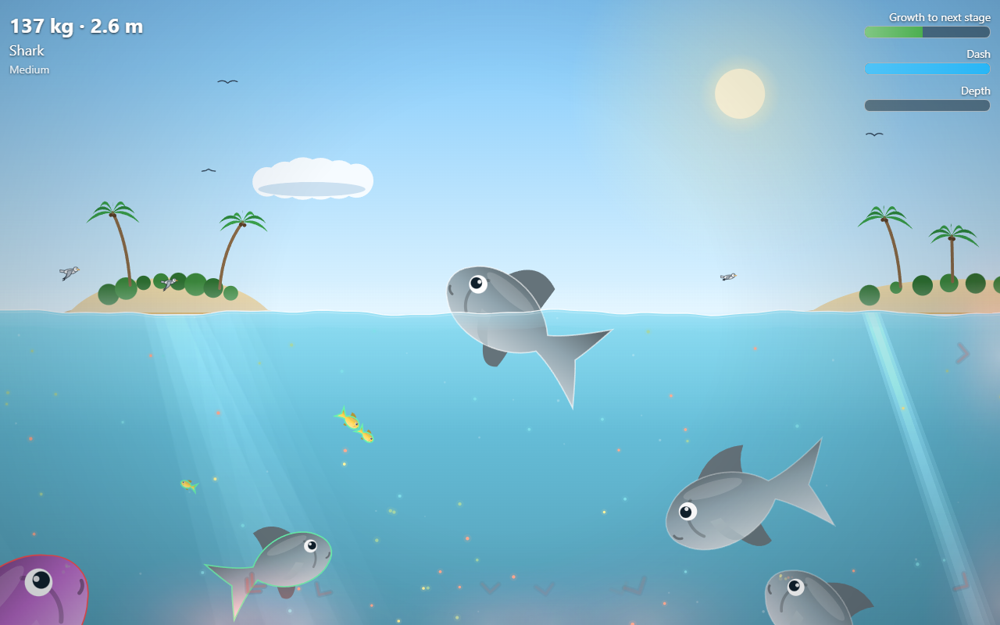
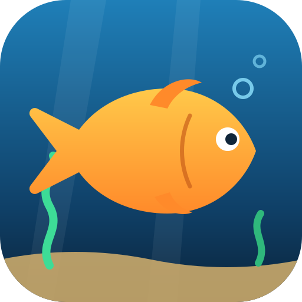
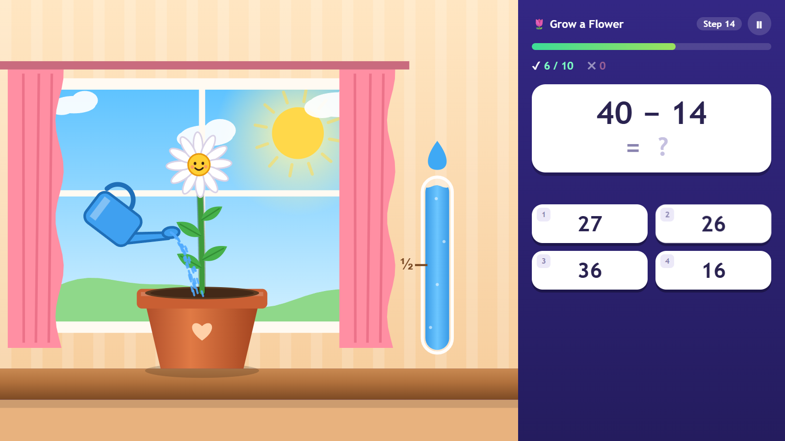
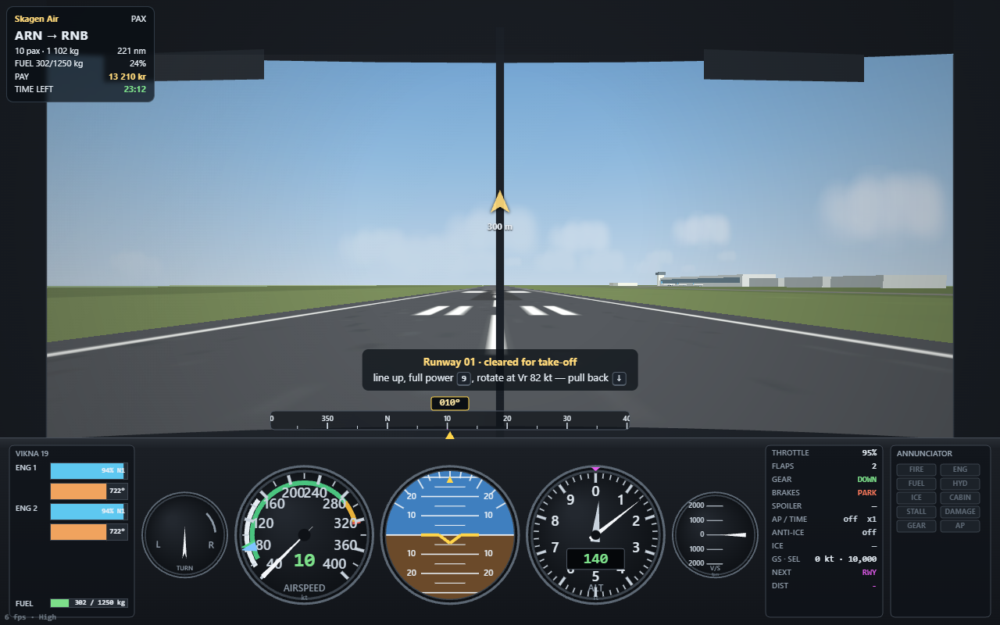

Flight Simulator
First-person arcade flight game: steer with the arrow keys, fire a twin-gun with Ctrl to pop balloons for points, and land on the highlighted airport's runway.


Fish FrenzyEat-and-grow arcade game: steer a fish with the arrow keys or a touch joystick, eat plankton and smaller fish, avoid bigger ones and jellyfish, and climb the food chain to the Sea King. Three difficulty levels and best-time records.

Fun Training
A training game for school kids: water a flower, stop zombies, lay rails for a train, keep a balloon in the air, a campfire burning or a panda fed and happy by answering tasks in time. Math, reading-scale and listen-and-read tasks (Swedish, English, Russian), players, progress tracks with stars and bosses, coins and diamonds to spend on your own character — food, clothes and a room to furnish — and settings for operations, limits and speed.

 World Aviation
World Aviation
A cockpit-view flight simulator and airline career: start with Swedish domestic flights out of Arlanda, win Scandinavia, then buy the traffic rights to the rest of the world, region by region. Push back, taxi, take off, work the emergency checklists, fly the ILS and land — from Visby to New York and Tokyo. Eighteen aircraft from a 19-seat turboprop to the ATR 72, the Embraer E2, the A220, the 737, the A320neo, the 787, the A350, the 777, the An-124, the 747-8F and the double-deck A380, 132 real airports, a training tree and Swedish kronor.